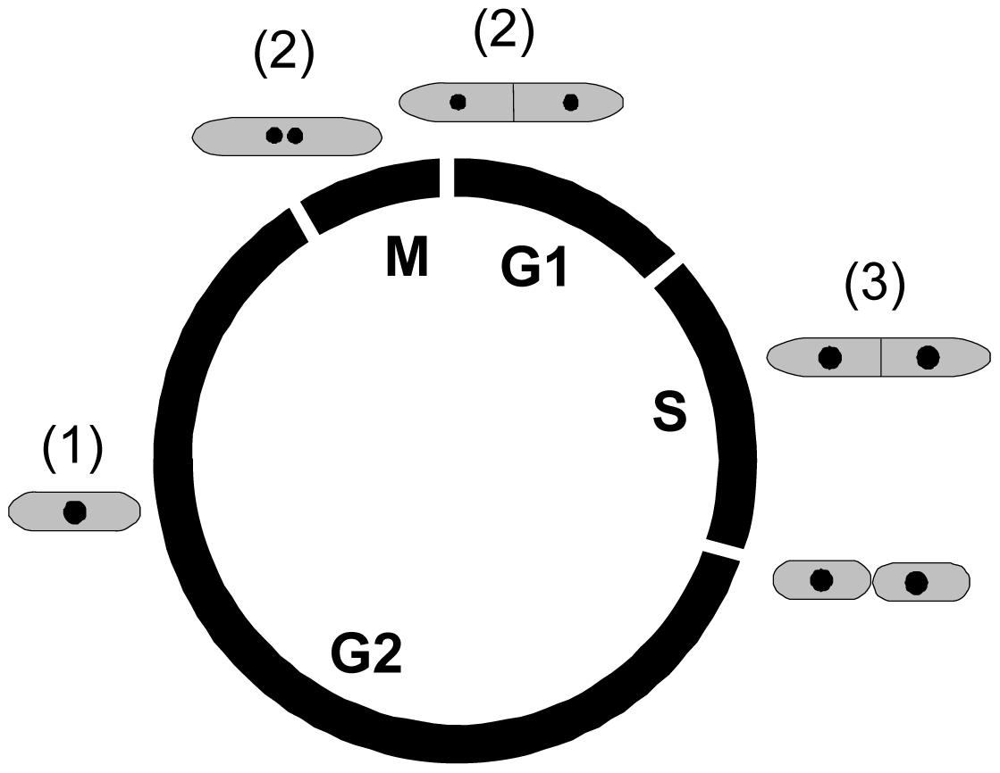

Introduction
The fission yeast Schizosaccharomyces pombe (S. pombe) is a unicellular eukaryote that are rod-shaped. As it grows, it increases its length while maintaining a constant diameter. That is why the length of a cell can be used to determine its position within the cell cycle. The cells are usually 7 micrometres in length, and Upon reaching 14 micrometres, cells stop growing and enter mitosis. Cells then divide by assembling an actomyosin contractile ring at the geometrical center of the cell. S. pombe divide by medial fission, producing two identical daughter cells.
Research on the fission yeast is popular among the researchers as it is easy and inexpensive to grow and manipulate the fission yeast cell. Also, it is a popular system for studies of cell growth and division due of its regular size. Its chromosome structure is a good model for human chromosomes. Fission yeast shares numerous features with human chromosomes including large and complex centromeres and replication origins, "typical" heterochromatin,and small ncRNA (miRNA) regulation; these features are missing, or different, in budding yeast.
Figure 1: Microscopic view of the Schizosaccharomyces pombe
Comparison to budding yeast cell
Fission yeast cells have distinct traits compared to the budding yeast cell. The both cell's genomes share no synteny, and fission yeast cell does not show evidence for genome duplications as with of the budding yeast cell. This can be attributed to the fact that the fission yeast and the budding yeast cell are seperated by an 1000 million years of evolution.
However, there are some similarity between the fission yeast and budding yeast cell. Like budding yeast, fission yeast is genetically tractable, and lends itself to easy molecular manipulation. Most tools available in budding yeast cell are available in fission yeast cell versions that accommodate the distinct biology of the fission yeast, and similar genetic strategies are available for both systems.
Cell cycle of Fission Yeast

Figure 2: Representation of the fission yeast cell cycle
The nuclear cell cycle is divided into distinct G1 (10%), S (10%), G2 (70%) and M (10%) phases. In the fission yeast, cells in G1 and G2 phase have the same amount of DNA. The central events of cell reproduction are chromosome duplication, which takes place in S phase, followed by chromosome segregation and nuclear division and cell division (cytokinesis), which are collectively called M phase. G1 is the gap between M and S phases, and G2 is the gap between S and M phases. In the fission yeast, the G2 phase is particularly extended, and cytokinesis does not happen until a new S phase is launched.
Further information about the fission yeast can be found at https://en.wikipedia.org/wiki/Schizosaccharomyces_pombe
Reference
- "Fission Yeast Cell Cycle", USC Dornsife, https://dornsife.usc.edu/pombenet/fission-yeast-cell-cycle/
- Knutsen, Jon Halvor, et al. "Cell-Cycle Analysis of Fission Yeast Cells by Flow Cytometry." PLoS ONE, vol. 6, no. 2, 2011, https://doi.org/10.1371/journal.pone.0017175.
 webmaster
webmaster